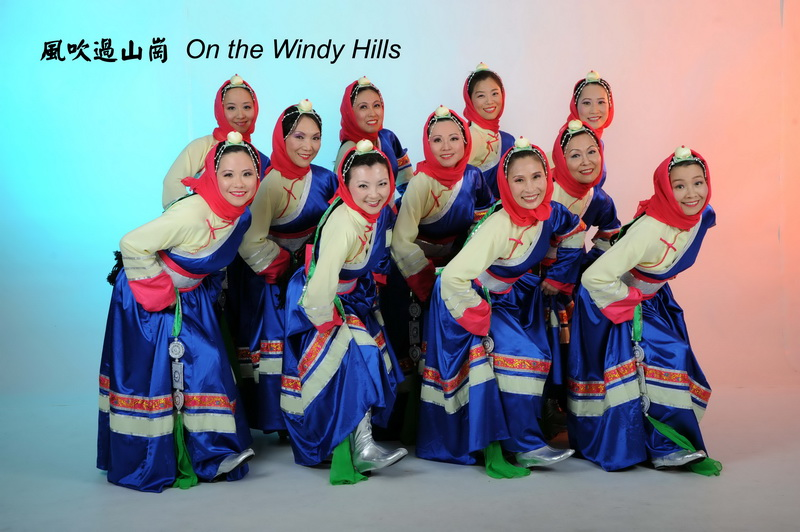
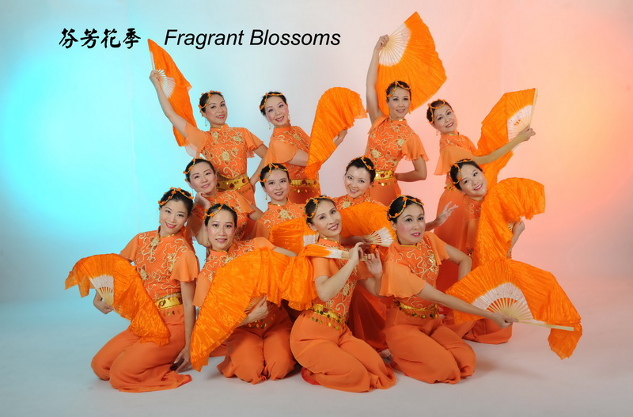
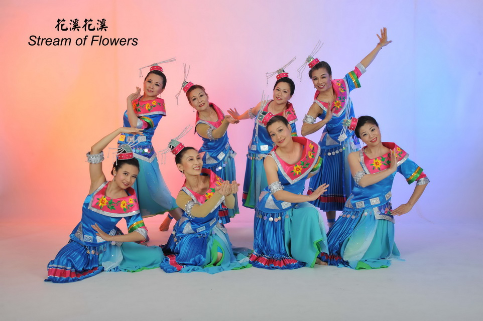
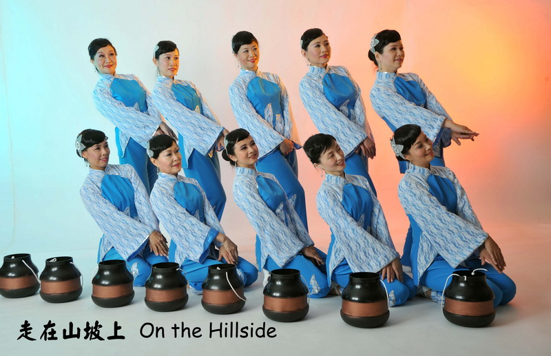
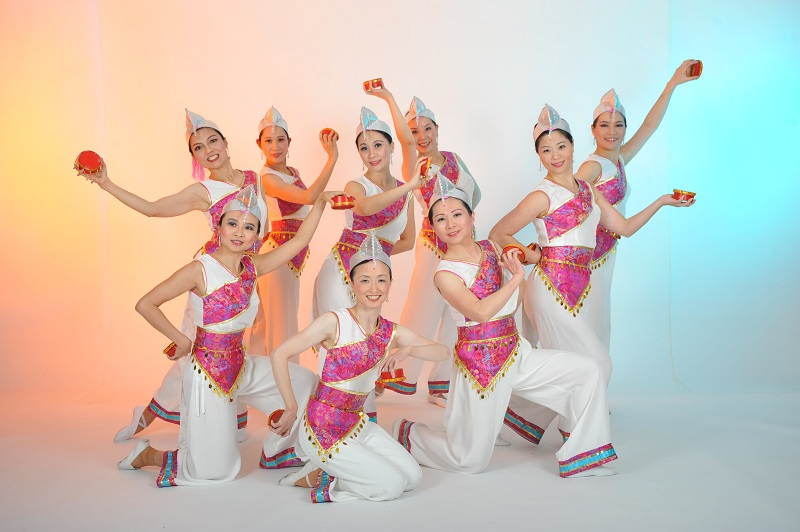
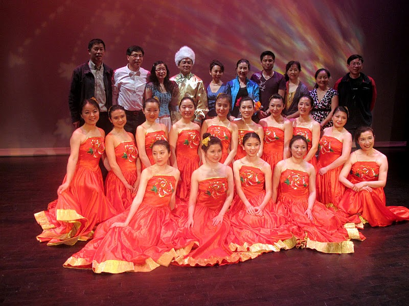

|
| On the Windy Hills (风吹过山岗) |
Fragrant Blossoms (芬芳花季) |
Stream of Flowers (花溪花溪) |
| Tibetan (藏族) dance |
Classical (古典) dance |
Miao (苗族) dance |
| Original dance from 碧海云天金银滩 |
Original dance from 河北大学艺术学院 |
Original dance from 贵阳大地之舞艺术学院 |
 |
 |
 |
| YaoYong Dance |
YaoYong Dance |
YaoYong Dance |
| 2013 Spring Showcase |
2012 Autumn Showcase |
2012 Spring Showcase |
|
| On the Hillside (走在山坡上) |
Tobacco Box (跳弦) |
|
| Han (汉族) dance |
Yi (彝族) dance |
|
| Original dance from 山西省歌舞剧院 |
Original dance from 第九届桃李杯 |
|
 |
 |
 |
| YaoYong Dance |
YaoYong Dance |
Bayland Dancing |
| 2011 Autumn Showcase |
2011 Spring Showcase |
2010 Summer |